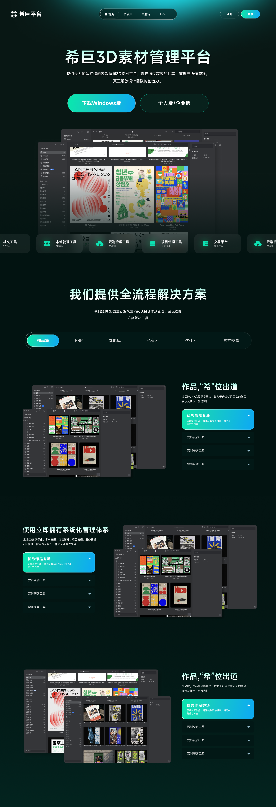
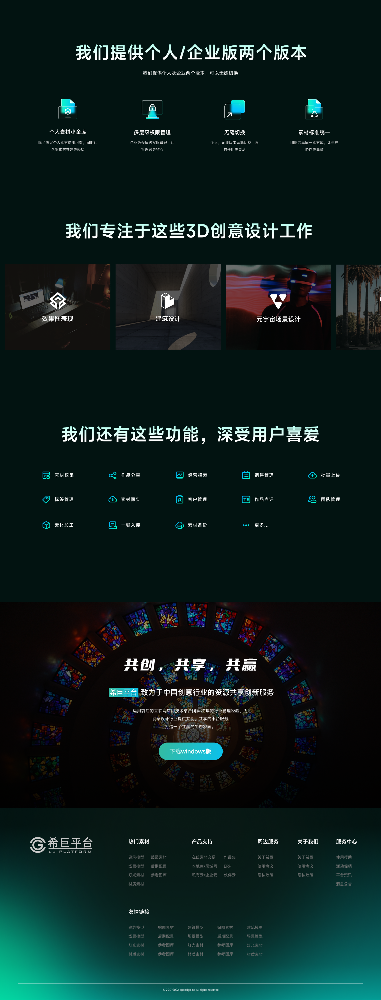
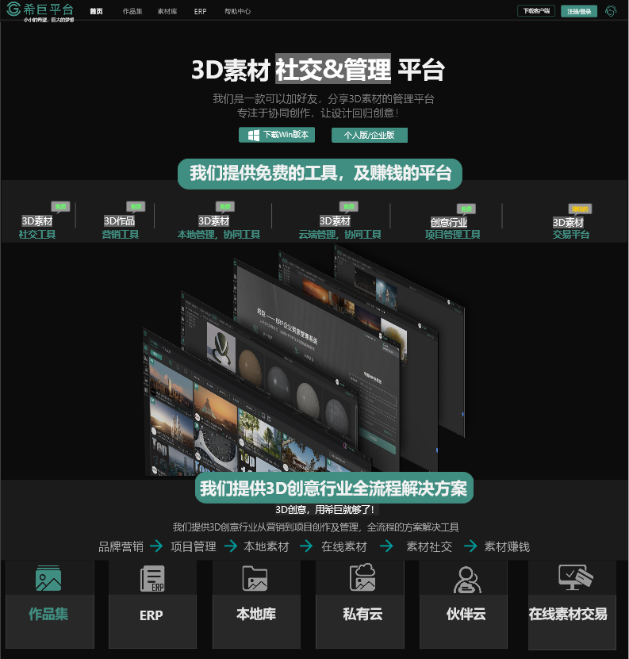
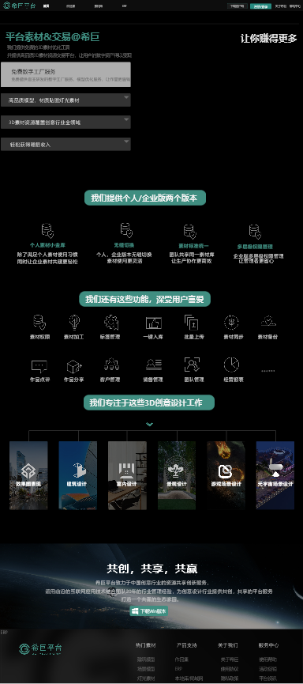
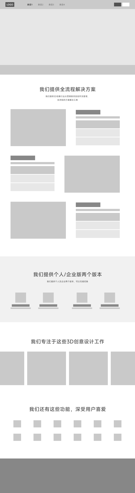
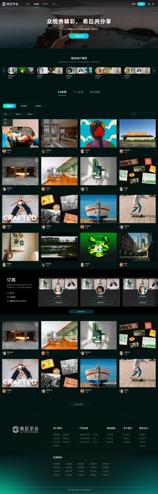

Competitor Analysis
Architecture asset platforms use grids and modular layouts that fit the way architects think. This informed a sense of order to build trust and make browsing more efficient.


Responsibilities


Project Background
Xiju brings resource sharing and innovation to China’s creative industry. Combining advanced internet technologies with 20 years of industry management experience, it provides a shared platform for creative design professionals.
Project Background



Project Background
I want people to see us as a professional architecture magazine.
The pages feel a little cluttered.
Project Background
“A professional magazine, not an asset warehouse.”
“It doesn’t feel premium.”

Refine the visual direction
Unify the brand language throughout
“The page feels cluttered.”
“I’d rather use my own folders.”
Restructure the information architecture
Standardize the visual design throughout
Project Background
A more orderly page layout calls for a visual system as precise as an architectural drawing: modular cards establish a steady rhythm, while a clear information hierarchy guides the eye. These systematic constraints create a rational, predictable interface that conveys professionalism and trust.

Project Background
Architecture asset platforms use grids and modular layouts that fit the way architects think. This informed a sense of order to build trust and make browsing more efficient.
BIM, parametric design and smart construction are driving digital change in architecture. Dark tones, luminous elements and futuristic details express that change through a technology-focused visual style.
Architects look for tools that reflect their professional taste and identity, not just their needs. Minimal layouts, refined greys and careful material and lighting details create a sophisticated visual feel.
Project Background
MiSans
Numerals
DIN
0123456789
0123456789
0123456789
Project Background
Xiju’s brand green is adjusted in brightness and saturation, with gradients for a brighter, more technological and futuristic feel. The supporting palette includes green, cyan-blue, and white.
#16D0BE #04C3F5
#04C9B5
#03C4F6
#FFFFFF
Project Background




Built from geometric forms, these icons use contrast, repetition and alignment for simple, expressive shapes. Precise proportions and refined details create a calm, sophisticated feel.


Tool-inspired icons combine translucent frosted glass with luminous outlines. Transitions between highlights and shadows balance physical weight with digital clarity, bringing together technology and professionalism.
More pages

Project Background